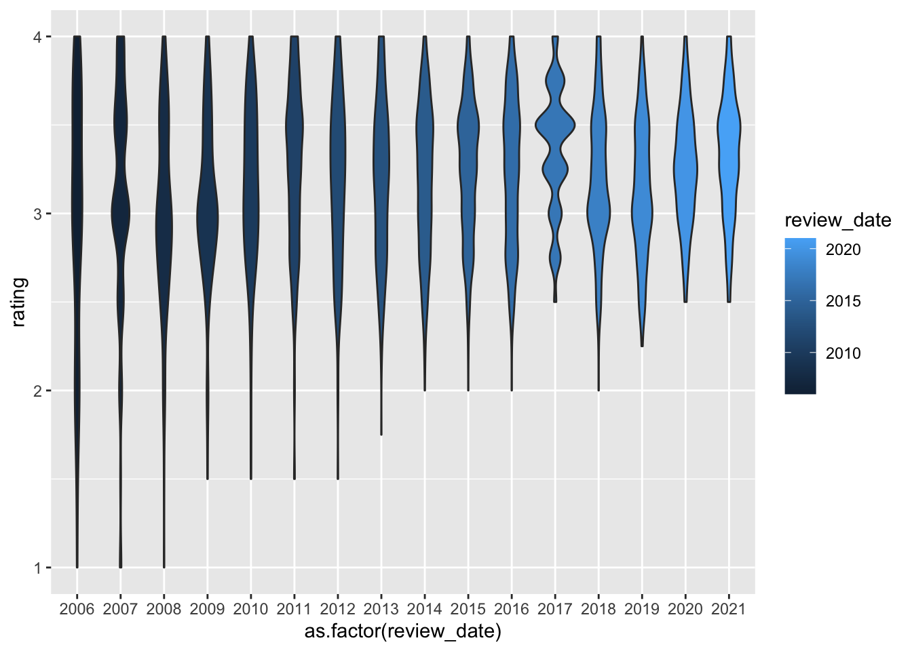

install.packages("tidyverse")Project 1
project 1
projects
Finding great chocolate bars!
Background
Due date: Sept 16 at 11:59pm
To submit your project
Please write up your project using R Markdown and knitr. Compile your document as an HTML file and submit your HTML file to the dropbox on Courseplus. Please show all your code for each of the answers to each part.
To get started, watch this video on setting up your R Markdown document.
Install tidyverse
Before attempting this assignment, you should first install the tidyverse package if you have not already. The tidyverse package is actually a collection of many packages that serves as a convenient way to install many packages without having to do them one by one. This can be done with the install.packages() function.
Running this function will install a host of other packages so it make take a minute or two depending on how fast your computer is. Once you have installed it, you will want to load the package.
library(tidyverse)Data
That data for this part of the assignment comes from TidyTuesday, which is a weekly podcast and global community activity brought to you by the R4DS Online Learning Community. The goal of TidyTuesday is to help R learners learn in real-world contexts.

[Source: TidyTuesday]
{kind=link}
If we look at the TidyTuesday github repo from 2022, we see this dataset chocolate bar reviews.
To access the data, you need to install the tidytuesdayR R package and use the function tt_load() with the date of ‘2022-01-18’ to load the data.
install.packages("tidytuesdayR")This is how you can download the data.
tuesdata <- tidytuesdayR::tt_load('2022-01-18')
chocolate <- tuesdata$chocolateHowever, if you use this code, you will hit an API limit after trying to compile the document a few times. Instead, I suggest you use the following code below. Here, I provide the code below for you to avoid re-downloading data:
library(here)
library(tidyverse)
# tests if a directory named "data" exists locally
if(!dir.exists(here("data"))) { dir.create(here("data")) }
# saves data only once (not each time you knit a R Markdown)
if(!file.exists(here("data","chocolate.RDS"))) {
url_csv <- 'https://raw.githubusercontent.com/rfordatascience/tidytuesday/master/data/2022/2022-01-18/chocolate.csv'
chocolate <- readr::read_csv(url_csv)
# save the file to RDS objects
saveRDS(chocolate, file= here("data","chocolate.RDS"))
}Here we read in the .RDS dataset locally from our computing environment:
chocolate <- readRDS(here("data","chocolate.RDS"))
as_tibble(chocolate)# A tibble: 2,530 × 10
ref compan…¹ compa…² revie…³ count…⁴ speci…⁵ cocoa…⁶ ingre…⁷ most_…⁸ rating
<dbl> <chr> <chr> <dbl> <chr> <chr> <chr> <chr> <chr> <dbl>
1 2454 5150 U.S.A. 2019 Tanzan… Kokoa … 76% 3- B,S… rich c… 3.25
2 2458 5150 U.S.A. 2019 Domini… Zorzal… 76% 3- B,S… cocoa,… 3.5
3 2454 5150 U.S.A. 2019 Madaga… Bejofo… 76% 3- B,S… cocoa,… 3.75
4 2542 5150 U.S.A. 2021 Fiji Matasa… 68% 3- B,S… chewy,… 3
5 2546 5150 U.S.A. 2021 Venezu… Sur de… 72% 3- B,S… fatty,… 3
6 2546 5150 U.S.A. 2021 Uganda Semuli… 80% 3- B,S… mildly… 3.25
7 2542 5150 U.S.A. 2021 India Anamal… 68% 3- B,S… milk b… 3.5
8 797 A. Morin France 2012 Bolivia Bolivia 70% 4- B,S… vegeta… 3.5
9 797 A. Morin France 2012 Peru Peru 63% 4- B,S… fruity… 3.75
10 1011 A. Morin France 2013 Panama Panama 70% 4- B,S… brief … 2.75
# … with 2,520 more rows, and abbreviated variable names ¹company_manufacturer,
# ²company_location, ³review_date, ⁴country_of_bean_origin,
# ⁵specific_bean_origin_or_bar_name, ⁶cocoa_percent, ⁷ingredients,
# ⁸most_memorable_characteristicsWe can take a glimpse at the data
glimpse(chocolate)Rows: 2,530
Columns: 10
$ ref <dbl> 2454, 2458, 2454, 2542, 2546, 2546, 2…
$ company_manufacturer <chr> "5150", "5150", "5150", "5150", "5150…
$ company_location <chr> "U.S.A.", "U.S.A.", "U.S.A.", "U.S.A.…
$ review_date <dbl> 2019, 2019, 2019, 2021, 2021, 2021, 2…
$ country_of_bean_origin <chr> "Tanzania", "Dominican Republic", "Ma…
$ specific_bean_origin_or_bar_name <chr> "Kokoa Kamili, batch 1", "Zorzal, bat…
$ cocoa_percent <chr> "76%", "76%", "76%", "68%", "72%", "8…
$ ingredients <chr> "3- B,S,C", "3- B,S,C", "3- B,S,C", "…
$ most_memorable_characteristics <chr> "rich cocoa, fatty, bready", "cocoa, …
$ rating <dbl> 3.25, 3.50, 3.75, 3.00, 3.00, 3.25, 3…Here is a data dictionary for what all the column names mean:
Part 1: Explore data
In this part, use functions from dplyr and ggplot2 to answer the following questions.
- Make a histogram of the
ratingscores to visualize the overall distribution of scores. Change the number of bins from the default to 10, 15, 20, and 25. Pick on the one that you think looks the best. Explain what the difference is when you change the number of bins and explain why you picked the one you did.
# Add your solution here and describe your answer afterwardsThe ratings are discrete values making the histogram look strange. When you make the bin size smaller, it aggregates the ratings together in larger groups removing that effect. I picked 15, but there really is no wrong answer. Just looking for an answer here.
- Consider the countries where the beans originated from. How many reviews come from each country of bean origin?
# Add your solution here- What is average
ratingscores from reviews of chocolate bars that have Ecuador ascountry_of_bean_originin this dataset? For this same set of reviews, also calculate (1) the total number of reviews and (2) the standard deviation of theratingscores. Your answer should be a new data frame with these three summary statistics in three columns. Label the name of these columnsmean,sd, andtotal.
# Add your solution here- Which country makes the best chocolate (or has the highest ratings on average) with beans from Ecuador?
# Add your solution here- Calculate the average rating across all country of origins for beans. Which top 3 countries have the highest ratings on average?
# Add your solution here- Following up on the previous problem, now remove any countries of bean origins that have less than 10 chocolate bar reviews. Now, which top 3 countries have the highest ratings on average?
# Add your solution here- For this last part, let’s explore the relationship between percent chocolate and ratings.
Use the functions in dplyr, tidyr, and lubridate to perform the following steps to the chocolate dataset:
- Identify the countries of bean origin with at least 50 reviews. Remove reviews from countries are not in this list.
- Using the variable describing the chocolate percentage for each review, create a new column that groups chocolate percentages into one of four groups: (i) <60%, (ii) >=60 to <70%, (iii) >=70 to <90%, and (iii) >=90% (Hint check out the
substr()function in base R and thecase_when()function fromdplyr– see example below). - Using the new column described in #2, re-order the factor levels (if needed) to be starting with the smallest percentage group and increasing to the largest percentage group (Hint check out the
fct_relevel()function fromforcats). - For each country, make a set of four side-by-side boxplots plotting the groups on the x-axis and the ratings on the y-axis. These plots should be faceted by country.
On average, which category of chocolate percentage is most highly rated? Do these countries mostly agree or are there disagreements?
Hint: You may find the case_when() function useful in this part, which can be used to map values from one variable to different values in a new variable (when used in a mutate() call).
## Generate some random numbers
dat <- tibble(x = rnorm(100))
slice(dat, 1:3)# A tibble: 3 × 1
x
<dbl>
1 -1.17
2 0.0494
3 -1.63 ## Create a new column that indicates whether the value of 'x' is positive or negative
dat %>%
mutate(is_positive = case_when(
x >= 0 ~ "Yes",
x < 0 ~ "No"
))# A tibble: 100 × 2
x is_positive
<dbl> <chr>
1 -1.17 No
2 0.0494 Yes
3 -1.63 No
4 -1.43 No
5 -0.934 No
6 0.618 Yes
7 0.877 Yes
8 -0.568 No
9 -0.459 No
10 1.75 Yes
# … with 90 more rows# Add your solution herePart 2: Join two datasets together
The goal of this part of the assignment is to join two datasets together. gapminder is a R package that contains an excerpt from the Gapminder data.
Tasks
- Use this dataset it to create a new column called
continentin ourchocolatedataset that contains the continent name for each review where the country of bean origin is. - Only keep reviews that have reviews from countries of bean origin with at least 10 reviews.
- Also, remove the country of bean origin named
"Blend". - Make a set of violin plots with ratings on the y-axis and
continents on the x-axis.
Hint:
- Check to see if there are any
NAs in the new column. If there are anyNAs, add the continent name for each row.
# Add your solution herePart 3: Convert wide data into long data
The goal of this part of the assignment is to take a dataset that is either messy or simply not tidy and to make them tidy datasets. The objective is to gain some familiarity with the functions in the dplyr, tidyr packages. You may find it helpful to review the section on spreading and gathering data.
Tasks
We are going to create a set of features for us to plot over time. Use the functions in dplyr and tidyr to perform the following steps to the chocolate dataset:
- Create a new set of columns titled
beans,sugar,cocoa_butter,vanilla,letchin, andsaltthat contain a 1 or 0 representing whether or not that review for the chocolate bar contained that ingredient (1) or not (0). - Create a new set of columns titled
char_cocoa,char_sweet,char_nutty,char_creamy,char_roasty,char_earthythat contain a 1 or 0 representing whether or not that the most memorable characteristic for the chocolate bar had that word (1) or not (0). For example, if the word “sweet” appears in themost_memorable_characteristics, then record a 1, otherwise a 0 for that review in thechar_sweetcolumn (Hint: check outstr_detect()from thestringrpackage). - For each year (i.e.
review_date), calculate the mean value in each new column you created across all reviews for that year. (Hint: If all has gone well thus far, you should have a dataset with 16 rows and 13 columns). - Convert this wide dataset into a long dataset with a new
featureandmean_scorecolumn.
It should look something like this:
review_date feature mean_score
<dbl> <chr> <dbl>
2006 beans 1.000000000
2006 sugar 1.000000000
2006 cocoa_butter 0.925000000
2006 vanilla 0.700000000
2006 letchin 0.725000000
2006 salt 0.000000000
2006 char_cocoa 0.175000000
2006 char_sweet 0.175000000
2006 char_nutty 0.050000000
2006 char_creamy 0.375000000 Notes
You may need to use functions outside these packages to obtain this result.
Do not worry about the ordering of the rows or columns. Depending on whether you use
gather()orpivot_longer(), the order of your output may differ from what is printed above. As long as the result is a tidy data set, that is sufficient.
# Add your solution herePart 4: Data visualization
In this part of the project, we will continue to work with our now tidy song dataset from the previous part.
Tasks
Use the functions in ggplot2 package to make a scatter plot of the mean_scores (y-axis) over time (x-axis). One plot for each mean_score. For full credit, your plot should include:
- An overall title for the plot and a subtitle summarizing key trends that you found. Also include a caption in the figure with your name.
- Both the observed points for the
mean_score, but also a smoothed non-linear pattern of the trend - All plots should be shown in the one figure
- There should be an informative x-axis and y-axis label
Consider playing around with the theme() function to make the figure shine, including playing with background colors, font, etc.
Notes
You may need to use functions outside these packages to obtain this result.
Don’t worry about the ordering of the rows or columns. Depending on whether you use
gather()orpivot_longer(), the order of your output may differ from what is printed above. As long as the result is a tidy data set, that is sufficient.
# Add your solution herePart 5: Make the worst plot you can!
This sounds a bit crazy I know, but I want this to try and be FUN! Instead of trying to make a “good” plot, I want you to explore your creative side and make a really awful data visualization in every way. :)
Tasks
Using the chocolate dataset (or any of the modified versions you made throughout this assignment or anything else you wish you build upon it):
- Make the absolute worst plot that you can. You need to customize it in at least 7 ways to make it awful.
- In your document, write 1 - 2 sentences about each different customization you added (using bullets – i.e. there should be at least 7 bullet points each with 1-2 sentences), and how it could be useful for you when you want to make an awesome data visualization.
# Add your solution herePart 6: Make my plot a better plot!
The goal is to take my sad looking plot and make it better! If you’d like an example, here is a tweet I came across of someone who gave a talk about how to zhoosh up your ggplots.
chocolate %>%
ggplot(aes(x = as.factor(review_date),
y = rating,
fill = review_date)) +
geom_violin()
Tasks
- You need to customize it in at least 7 ways to make it better.
- In your document, write 1 - 2 sentences about each different customization you added (using bullets – i.e. there should be at least 7 bullet points each with 1-2 sentences), describing how you improved it.
# Add your solution here